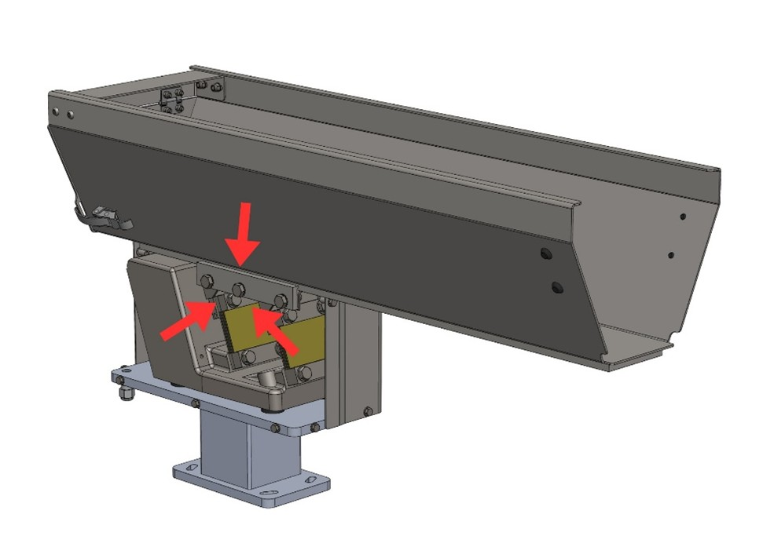

Manutenzione e Risoluzione Problemi#
Warning
Eseguire le operazioni di manutenzione quando la macchina è spenta.
Warning
Le operazioni di manutenzione devono essere eseguite da personale qualificato ed autorizzato.
La manutenzione della macchina comprende gli interventi (ispezione, verifica, controllo, regolazione e sostituzione) che si rendono necessari in seguito al normale uso.
Linee guida per una corretta manutenzione:
Il personale addetto deve essere ben addestrato e avere un’approfondita conoscenza delle norme antinfortunistiche. Il personale non autorizzato deve rimanere all’esterno dell’area di lavoro durante le operazioni.
Le attività di pulizia e regolazione vengono effettuate solo ed esclusivamente in fase di manutenzione, a macchina ferma, de-energizzata e con quadro elettrico sezionato.
Important
In caso di dubbi è vietato operare. Interpellare il Costruttore per i necessari chiarimenti.
Attention
Gli interventi di riparazione o di manutenzione non contenuti nel presente manuale possono essere eseguiti soltanto previa autorizzazione di ARS S.r.l. Nessuna responsabilità relativa a danni a persone o cose può essere attribuita a ARS S.r.l. per interventi diversi da quelli descritti od eseguiti con modalità diverse da quelle indicate.
Classificazione operativa delle manutenzioni#
Tipo manutenzione |
Descrizione |
|---|---|
Manutenzione ordinaria |
Operazioni preventive per garantire il buon funzionamento della macchina nel tempo (ispezione, controllo, regolazione, pulizia e lubrificazione). |
Manutenzione straordinaria |
Interventi correttivi al bisogno (revisione, riparazione, ripristino delle condizioni nominali o sostituzione di un gruppo guasto, difettoso o usurato). |
Avvertenze di Sicurezza#
Attention
Prima di iniziare qualsiasi intervento di manutenzione sulla macchina, sezionare e lucchettare tutte le fonti energetiche, e mettere in condizione di blocco in sicurezza i gruppi mobili che la compongono. Apporre il cartello “Macchina in manutenzione - non inserire l’alimentazione” presso l’interruttore generale.
Attention
Quando la macchina è in manutenzione, per evitare che questa possa essere messa in funzione accidentalmente, apporre cartelli con la dicitura: “ATTENZIONE! Macchina In Manutenzione”.
Manutenzione Ordinaria#
La manutenzione ordinaria tiene sotto controllo le condizioni meccaniche e la pulizia della macchina. Le periodicità indicate si riferiscono a condizioni di funzionamento normali.
Important
Per quanto riguarda la manutenzione ordinaria delle macchine provenienti da fornitori esterni, si rimanda ai manuali dei sub-fornitori allegati.
Important
Nel fissaggio delle viti utilizzare sempre LOCTITE 243 per garantire un perfetto serraggio anti-vibrante.
Controlli e verifiche#
Tabella di manutenzione ordinaria – Controlli#
Operazione |
Giornaliera |
Settimanale |
Mensile |
Semestrale |
Annuale |
|---|---|---|---|---|---|
Controllo stato della vasca prima di ogni avviamento |
◈ |
||||
Controllo stato di usura dei relè |
◈ |
||||
Controllo corretto funzionamento dei fusibili |
◈ |
||||
Controllo stato di usura delle balestre |
◈ |
||||
Controllo corretto funzionamento dell’elettromagnete |
◈ |
||||
Controllo usura rivestimento in poliuretano (ove presente) |
◈ |
Verifica dispositivi di sicurezza#
Per la verifica dell’integrità dei sistemi di protezione, eseguire i seguenti passi:
Pulizia#
Attention
Le operazioni di pulizia devono essere eseguite solo da personale qualificato e autorizzato.
Attention
Per pulire la macchina, non utilizzare frammenti di spugna, panni umidi e/o abrasivi, stracci filamentosi, benzina o solventi infiammabili come detergente.
Attention
Non usare acidi o solventi chimici aggressivi per pulire la base della tramoggia.
Important
Usare prodotti delicati e non abrasivi, come sgrassatori neutri o comune sapone domestico. Per rimuovere frammenti e polveri, usare un pennello avendo cura di indossare gli occhiali protettivi.
Tabella di manutenzione ordinaria – Pulizia#
Operazione |
Giornaliera |
Settimanale |
Mensile |
Semestrale |
Annuale |
|---|---|---|---|---|---|
Rimozione residui e scarti di processo dalla superficie vasca |
◈ |
||||
Rimozione grasso e olio con prodotti o solventi neutri |
◈ |
||||
Pulizia generale della macchina |
◈ |
Procedura di pulizia generale#
Important
La pulizia generale della macchina deve essere effettuata ogni qual volta viene sostituito il tipo di componente da lavorare, in modo da eliminare residui contaminanti della lavorazione precedente.
Manutenzione Straordinaria#
Attention
La manutenzione straordinaria e la riparazione della macchina sono riservate ai tecnici qualificati, istruiti ed autorizzati, dipendenti dal Costruttore o dal centro assistenza autorizzato.
Se accadono eventi eccezionali che richiedono interventi straordinari, i manutentori interni dell’utilizzatore devono:
Verificare con precisione lo stato dei gruppi danneggiati o sfasati.
Eseguire esclusivamente le operazioni descritte in questo paragrafo se autorizzati.
Se le operazioni non sono contemplate in questo manuale, trasmettere al Costruttore una relazione dettagliata dei fatti, l’esito dell’ispezione e le osservazioni rilevate.
Attention
Le parti di ricambio da sostituire devono essere ordinate direttamente a ARS S.r.l. Nel caso in cui non vengano utilizzati ricambi originali o autorizzati per iscritto, il Costruttore declina ogni responsabilità sul funzionamento della macchina e sulla sicurezza degli operatori.
Attention
Disconnettere l’alimentazione elettrica e pneumatica prima di procedere con qualsiasi operazione di manutenzione straordinaria o prima di rimuovere le cover di protezione.
Important
Nel serraggio delle viti utilizzare sempre frenafiletti LOCTITE 243 per garantire la tenuta meccanica.
Regolazione traferro#
Il traferro è la distanza fisica che intercorre tra il nucleo ed il contro-nucleo; una regolazione millimetrica è fondamentale:
Traferro troppo stretto: Le superfici del nucleo e del contro-nucleo entrano in contatto meccanico durante il funzionamento, provocando il “battito”.
Traferro troppo largo: La corrente elettrica del vibratore può salire a livelli critici, provocando la bruciatura dell’avvolgimento e il danneggiamento dei componenti interni del controller.
Attention
Non far funzionare in nessun caso il vibratore qualora si verifichi una delle due condizioni sopra descritte.
Important
Il traferro viene opportunamente tarato in fabbrica; interventi di regolazione si rendono necessari solo in caso di manipolazioni improprie o applicazioni di sovratensioni.
Dati operativi |
Specifiche di intervento |
|---|---|
Qualifica operatore |
Manutentore meccanico |
Utensili da utilizzare |
Chiave a forchetta |
Procedura di regolazione del traferro#
Note
La regolazione del traferro è un’operazione di precisione che può richiedere verifiche ripetute per ottenere il settaggio ideale.
Tabella tecnica di riferimento traferro#
Modello |
Dimensione magnete |
Traferro richiesto |
Rotazione vite di regolazione |
|---|---|---|---|
1,5lt |
Ø21 |
1,5 mm |
360° (1 giro completo) |
3lt |
Ø24 |
2 mm |
480° (1 giro + 1/3) |
5lt |
Ø28 |
3 mm |
720° (2 giri completi) |
10lt |
Ø28 |
3 mm |
720° (2 giri completi) |
20lt |
Ø28 |
3 mm |
720° (2 giri completi) |
40lt |
32x30 |
3 mm |
720° (2 giri completi) |
Sostituzione balestre#
Dati operativi |
Specifiche di intervento |
|---|---|
Qualifica operatore |
Manutentore meccanico |
Utensili da utilizzare |
Chiave a forchetta |
La modifica del dimensionamento del pacco balestre (numero e spessore dei fogli) serve a variare ed adeguare la portata utile del vibratore.
Procedura di sostituzione delle balestre#
Tabella tecnica balestre e coppie di serraggio#
Modello |
Dimensione balestre |
Spessore fogli |
Coppia di serraggio e filettatura |
|---|---|---|---|
1,5lt |
40x48 mm |
1 - 1,5 - 2 mm |
7,5 N·m – M5 |
3lt |
40x48 mm |
1 - 1,5 - 2 mm |
7,5 N·m – M5 |
5lt |
70x82 mm |
1,5 - 2 mm |
30 N·m – M8 |
10lt |
70x82 mm |
1,5 - 2 mm |
30 N·m – M8 |
20lt |
70x82 mm |
1,5 - 2 mm |
30 N·m – M8 |
40lt |
80x91 mm |
1,5 - 2 - 2,5 mm |
70 N·m – M10 |
Sostituzione vasca#
Dati operativi |
Specifiche di intervento |
|---|---|
Qualifica operatore |
Manutentore meccanico |
Utensili da utilizzare |
Chiave a forchetta |
Procedura di smontaggio e montaggio vasca#

Attention
Nel caso di modelli personalizzati i componenti potrebbero differire, parzialmente o totalmente, da quelli indicati. Per modelli di questo genere è necessario fare riferimento al fascicolo tecnico di progetto.
Troubleshooting#
Attention
Durante il normale funzionamento il vibratore deve operare silenziosamente. Se dovesse verificarsi un rumore cupo causato da un battito interno, spegnere immediatamente il sistema.
In caso di battito, controllare e ripristinare il traferro ottimale: se le superfici sono troppo vicine impatteranno meccanicamente; se troppo distanti, l’innalzamento anomalo di corrente brucerà gli avvolgimenti dello statore.
Sintomo riscontrato |
Possibile causa radice |
Azione correttiva richiesta |
|---|---|---|
Il vibratore funziona troppo lentamente |
La tensione di alimentazione è al di sotto della soglia nominale. |
Incrementare la tensione elettrica fino al valore corretto di targa. |
L’unità entra in contatto con oggetti rigidi esterni o strutture adiacenti. |
Ripristinare i giochi fisici isolando l’unità vibrante (3-5 cm). |
|
L’oscillazione dei pacchi balestre è ostacolata o frenata da accumuli. |
Smontare, pulire a fondo ed eliminare i residui dai pacchi balestre. |
|
Le balestre presentano cricche, difetti o snervamento strutturale. |
Provvedere alla sostituzione immediata del set balestre. |
|
Il canale vibrante è incrinato o usurato meccanicamente. |
Sostituire il canale. |
|
Il vibratore funziona troppo velocemente |
La tensione di alimentazione supera i limiti nominali (Causa prima di battito). |
Stabilizzare e ridurre la tensione di alimentazione al valore di targa. |
L’unità emette rumore (ronzio) ma non vibra |
La scheda elettronica di regolazione all’interno della cassetta è difettosa. |
Sostituire la scheda elettronica del controller. |
L’unità non si attiva e non risponde |
Mancanza totale di alimentazione elettrica in ingresso al Controller. |
Ispezionare la linea e rimuovere eventuali interruzioni elettriche. |
L’interruttore magnetotermico o il fusibile di protezione sono interrotti. |
Provvedere alla sostituzione dei fusibili o al riarmo. |
|
La scheda elettronica interna alla cassetta di controllo è danneggiata. |
Sostituire la scheda elettronica. |
|
L’avvolgimento interno del vibratore è bruciato o scarica a massa. |
Sostituire il gruppo elettromagnete. |
|
L’avvolgimento è in corto circuito interno. |
Sostituire l’avvolgimento. |
|
L’avvolgimento del reostato di regolazione risulta aperto. |
Sostituire il componente guasto. |